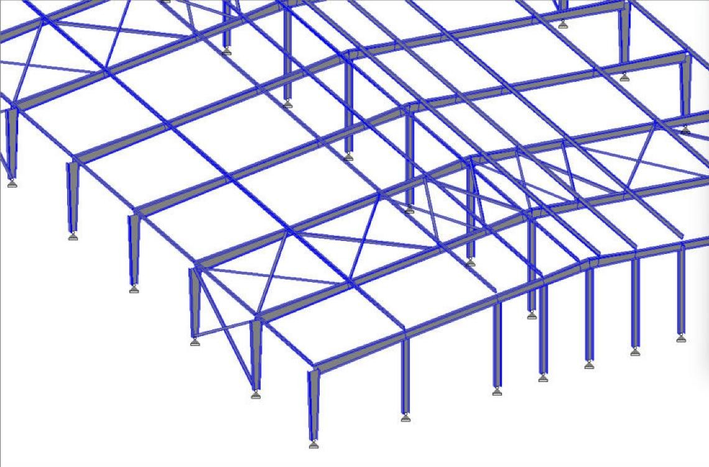
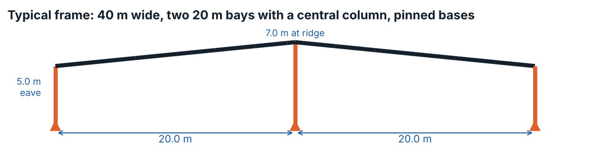
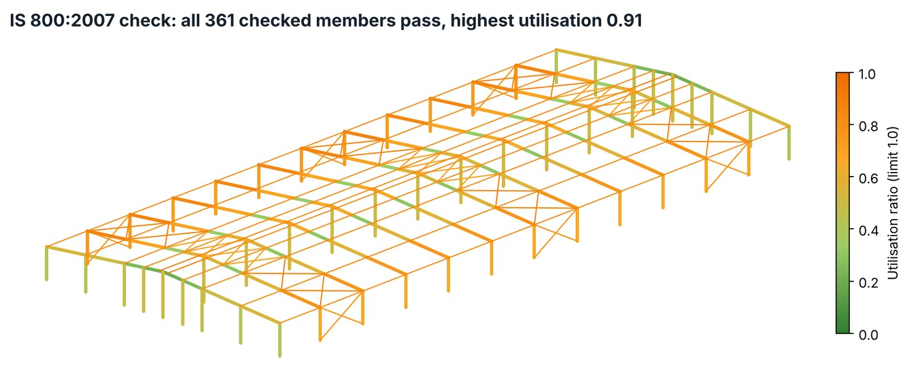

The challenge
The building needed a 40 m wide covered floor, about 91 m long, with a low eave of 5 m. A wide, low building attracts high wind uplift on the roof, and every frame is repeated twelve times, so any extra steel in one frame is multiplied across the whole building.
My approach
- Set out a two-span frame (2 × 20 m) with a central column, so the rafters stay shallow and light instead of spanning the full 40 m.
- Used tapered I-sections for rafters and columns: deep (up to 750 mm) where bending is highest at the eaves and the ridge, shallow where it is not.
- Applied wind loads to IS 875 Part 3 (basic wind speed 33 m/s) and seismic loads to IS 1893 with a response spectrum analysis, then checked 99 load combinations.
- Placed roof and wall bracing in the end and middle bays to carry wind along the length of the building into the foundations.
- Checked all 361 members to IS 800:2007 (limit state). Every member passes; the highest utilisation is 0.91, on a purlin, and 0.87 on the rafters.
- Designed the eave knee as a bolted extended end plate (12 × M24 grade 8.8, 25 mm plate) for the worst moment of 606 kNm, with column stiffeners at both rafter flanges. The highest bolt ratio is 0.91 including prying.



Results
- Steel weight of about 133 t, or about 36 kg per m² of floor.
- All members pass, with reserve in the columns (side columns 0.75, central columns 0.51).
- Eave knee connection passes all IS 800 checks: bolts, end plate, column web panel, stiffeners and welds.
- Support reactions issued for the foundation design.
Deliverables
- Structural analysis and design report
- Member schedule with tapered section sizes
- Connection details and check reports
- Support reactions for the foundation design